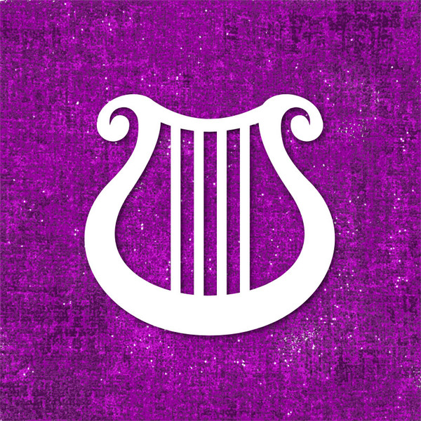

Clases
Bárbaro

Para algunos, su rabia brota de la comunión con espíritus de animales salvajes. Otros recurren a su hirviente reserva de ira frente a un mundo lleno de dolor. Para los bárbaros, la furia es un poder que no sólo les proporciona un frenesí ciego en la batalla, sino también extraordinarios reflejos, resistencia y proezas de fuerza.
Equipo: Además del que obtengas por tu trasfondo, empiezas con el siguiente equipo:
- (a) un hacha a dos manos o (b) cualquier arma cuerpo a cuerpo marcial;
- (a) dos hachas de mano o (b) cualquier arma sencilla;
- Un paquete de explorador y cuatro jabalinas.
Origen: Reglas básicas
Puntos de Golpe: d12
Requisitos para multiclase: Fuerza 13
Bardo
Ya sea un erudito, un poeta o un canalla, un bardo teje su magia a través de sus palabras y su música para inspirar a los aliados, desmoralizar a los enemigos, manipular mentes, crear ilusiones e incluso sanar heridas.
Equipo: Además del que obtengas por tu trasfondo, empiezas con el siguiente equipo:
- (a) un estoque, (b) una espada larga o (c) cualquier arma sencilla;
- (a) un paquete de diplomático o (b) un paquete de artista;
- (a) un laúd o (b) cualquier otro instrumento musical;
- Armadura de cuero y una daga.
Origen: Reglas básicas
Puntos de Golpe: d8
Requisitos para multiclase: Carisma 13
Magia
Lanzador de conjuros: Lanzador puro
Lanzamiento de conjuros: Mediante conjuros conocidos
Nivel de conjuro máximo: Nivel 9
Puede lanzar trucos: Sí
Aptitud mágica: Carisma
Lista de conjuros: Conjuros de bardo
Brujo

Los brujos son buscadores del conocimiento que se encuentra escondido en el multiverso. A través de pactos hechos con seres poderosos de poder sobrenatural, los brujos desatan efectos mágicos tanto sutiles como espectaculares y recolectan secretos arcanos para potenciar su propio poder.
Equipo: Además del que obtengas por tu trasfondo, empiezas con el siguiente equipo:
- (a) una ballesta ligera y 20 virotes o (b) cualquier arma sencilla;
- (a) un saquito de componentes o (b) un canalizador arcano;
- (a) un paquete de erudito o (b) un paquete de explorador de mazmorras;
- Armadura de cuero, cualquier arma sencilla y dos dagas
Origen: Reglas básicas
Puntos de Golpe: d8
Requisitos para multiclase: Carisma 13
Magia
Lanzador de conjuros: Lanzador puro
Lanzamiento de conjuros: Mediante conjuros conocidos
Nivel de conjuro máximo: Nivel 5
Puede lanzar trucos: Sí
Aptitud mágica: Carisma
Lista de conjuros: Conjuros de Brujo
Clérigo
Los clérigos son intermediarios entre el mundo mortal y los distantes planos divinos. Tan diferentes entre ellos como los dioses a los que sirven, los clérigos se esfuerzan por personificar las obras de sus deidades. No son sacerdotes ordinarios, un clérigo se encuentra imbuido de magia divina.
Equipo: Además del que obtengas por tu trasfondo, empiezas con el siguiente equipo:
- (a) una maza o (b) un martillo de guerra (si eres competente);
- (a) una cota de escamas, (b) una armadura de cuero o (c) una cota de malla (si eres competente);
- (a) una ballesta ligera y 20 virotes o (b) cualquier arma sencilla;
- (a) un paquete de sacerdote o (b) un paquete de explorador;
- un escudo y un símbolo sagrado.
Origen: Reglas básicas
Puntos de Golpe: d8
Requisitos para multiclase: Sabiduria 13
Magia
Lanzador de conjuros: Lanzador mixto
Lanzamiento de conjuros: Mediante conjuros conocidos
Nivel de conjuro máximo: Nivel 9
Puede lanzar trucos: Sí
Aptitud mágica: Sabiduria
Lista de conjuros: Conjuros de Clérigo
Druida

Ya sea invocando a las fuerzas elementales o emulando a las criaturas del mundo animal, los druidas son la personificación de la resistencia, astucia y furia de la naturaleza. Dicen no tener un dominio sobre la naturaleza. En lugar de eso, se ven como una extensión de la voluntad indomable de la misma.
Equipo: Además del que obtengas por tu trasfondo, empiezas con el siguiente equipo:
- (a) un escudo de madera o (b) cualquier arma sencilla;
- (a) una cimitarra o (b) cualquier arma cuerpo a cuerpo sencilla;
- armadura de cuero, un paquete de explorador y un canalizador druídico.
Origen: Reglas básicas
Puntos de Golpe: d8
Requisitos para multiclase: Sabiduria 13
Magia
Lanzador de conjuros: Lanzador puro
Lanzamiento de conjuros: Mediante conjuros preparados
Nivel de conjuro máximo: Nivel 9
Puede lanzar trucos: Sí
Aptitud mágica: Sabiduria
Lista de conjuros: Conjuros de Druida
Explorador

Lejos del bullicio de las ciudades y pueblos, más allá de las defensas que mantienen a las granjas más lejanas protegidas de los terrores de la naturaleza, en medio de tupidos bosques sin caminos y a través de enormes y vacías llanuras, los exploradores mantienen su interminable guardia.
Equipo: Además del que obtengas por tu trasfondo, empiezas con el siguiente equipo:
- (a) una cota de escamas o (b) una armadura de cuero;
- (a) dos espadas cortas o (b) dos armas cuerpo a cuerpo sencillas;
- (a) un paquete de explorador de mazmorras o (b) un paquete de explorador;
- Un arco largo y una aljaba con 20 flechas.
Origen: Reglas básicas
Puntos de Golpe: d10
Requisitos para multiclase:Destreza y Sabiduria 13
Magia
Lanzador de conjuros: Lanzador mixto
Lanzamiento de conjuros: Mediante conjuros conocidos
Nivel de conjuro máximo: Nivel 5
Puede lanzar trucos: No
Aptitud mágica: Sabiduria
Lista de conjuros: Conjuros de Explorador
Guerrero

Todos los guerreros comparten un dominio magistral de las armas y armaduras, y un exhaustivo conocimiento de las habilidades del combate. Además, están muy relacionados con la muerte, tanto repartiéndola como mirándola fijamente, desafiantes.
Equipo: Además del que obtengas por tu trasfondo, empiezas con el siguiente equipo:
- (a) una cota de malla o (b) una armadura de cuero, un arco largo y 20 flechas;
- (a) un arma marcial y un escudo o (b) dos armas marciales;
- (a) una ballesta ligera y 20 virotes o (b) dos hachas de mano;
- (a) un paquete de explorador de mazmorras o (b) un paquete de explorador.
Origen: Reglas básicas
Puntos de Golpe: d10
Hechicero

Los hechiceros tienen una magia innata, conferida por una línea de sangre exótica, una influencia de otro mundo o la exposición a fuerzas cósmicas desconocidas. Uno no puede estudiar hechicería como quien estudia un lenguaje, más de lo que uno puede aprender a vivir una vida legendaria. Nadie elige la hechicería, el poder elige al hechicero.
Equipo: Además del que obtengas por tu trasfondo, empiezas con el siguiente equipo:
- (a) una ballesta ligera y 20 virotes o (b) cualquier arma sencilla;
- (a) un saquito de componentes o (b) un canalizador arcano;
- (a) un paquete de explorador de mazmorras o (b) un paquete de explorador;
- Dos dagas
Origen: Reglas básicas
Puntos de Golpe: d6
Requisitos para multiclase:Carisma 13
Magia
Lanzador de conjuros: Lanzador puro
Lanzamiento de conjuros: Mediante conjuros conocidos
Nivel de conjuro máximo: Nivel 9
Puede lanzar trucos: Sí
Aptitud mágica: Carisma
Lista de conjuros: Conjuros de Hechicero
Mago

Los magos son los practicantes supremos de la magia, definidos y unidos como una clase por los hechizos que conjuran. A partir de la sutil onda de la magia que impregna el cosmos, los magos lanzan explosivos hechizos de fuego, arcos voltaicos, sutiles engaños y brutales formas de control mental.
Equipo: Además del que obtengas por tu trasfondo, empiezas con el siguiente equipo:
- (a) un bastón o (b) una daga;
- (a) un saquito de componentes o (b) un canalizador arcano;
- (a) un paquete de erudito o (b) un paquete de explorador;
- un libro de conjuros.
Origen: Reglas básicas
Puntos de Golpe: d6
Requisitos para multiclase:Inteligencia 13
Magia
Lanzador de conjuros: Lanzador puro
Lanzamiento de conjuros: Mediante conjuros preparados
Nivel de conjuro máximo: Nivel 9
Puede lanzar trucos: Sí
Aptitud mágica: Inteligencia
Lista de conjuros: Conjuros de mago
Monje
Cualquiera que sea su disciplina, los monjes están unidos por su habilidad para utilizar mágicamente la energía que corre por sus cuerpos. Ya sea canalizada en una impactante demostración de proeza marcial o en el sutil enfoque en la habilidad defensiva y la velocidad, esta energía impulsa todo lo que el monje hace.
Equipo: Además del que obtengas por tu trasfondo, empiezas con el siguiente equipo:
- (a) una espada corta o (b) cualquier arma sencilla;
- (a) un paquete de explorador de mazmorras o (b) un paquete de explorador;
- 10 dardos.
Origen: Reglas básicas
Puntos de Golpe: d8
Paladín

Sean cuales sean sus orígenes y sus misiones, los paladines están unidos por sus juramentos para luchar en contra de las fuerzas del mal. El juramento de un paladín es un lazo muy poderoso. Es una fuente de poder que convierte a un devoto guerrero en un campeón bendecido.
Equipo: Además del que obtengas por tu trasfondo, empiezas con el siguiente equipo:
- (a) un arma marcial y un escudo o (b) dos armas marciales;
- (a) cinco jabalinas o (b) cualquier arma cuerpo a cuerpo sencilla;
- (a) un paquete de sacerdote o (b) un paquete de explorador;
- Una cota de malla y un símbolo sagrado.
Origen: Reglas básicas
Puntos de Golpe: d10
Requisitos para multiclase:Fuerza 13 y Carisma 13
Magia
Lanzador de conjuros: Lanzador mixto
Lanzamiento de conjuros: Mediante conjuros preparados
Nivel de conjuro máximo: Nivel 5
Puede lanzar trucos: No
Aptitud mágica: Carisma
Lista de conjuros: Conjuros de Paladín
Pícaro

Los pícaros confían sus habilidades, el sigilo y las vulnerabilidades de sus oponentes para lograr sacar ventaja en cualquier situación. Tienen un don para encontrar la solución a prácticamente cualquier problema, demostrando un ingenio y versatilidad, que es la piedra angular de cualquier buen grupo de aventureros.
Equipo: Además del que obtengas por tu trasfondo, empiezas con el siguiente equipo:
- (a) un estoque o (b) una espada corta;
- (a) un arco corto y una aljaba de 20 flechas o (b) una espada corta;
- (a) un paquete de ladrón, (b) un paquete de explorador de mazmorras o (c) un paquete de explorador;
- (a) una armadura de cuero, dos dagas y herramientas de ladrón.
Origen: Reglas básicas
Puntos de Golpe: d8
Requisitos para multiclase:Destreza 13
Monstruos
Aquí vamos a incluir una tabla con los peores enemigos con los que una party de jugadores pueden encontrarse
| Nombre | Descripcion | Imagen |
|---|---|---|
| Goblin | Los goblins son pequeños humanoides, egoístas y de negro corazón, que habitan en cavernas, minas abandonadas, mazmorras saqueadas y otros lugares lúgubres. Dado que son individualmente débiles, se reúnen en grandes grupos, de un tamaño que llega a ser apabullante. Ansían el poder y abusan constantemente de cualquier migaja de autoridad que consigan | |
| Diablillo | Los diablillos varían ampliamente en apariencia, abarcando un espectro de rasgos bestiales y formas grotescas, aunque la mayoría adopta la forma de humanoides alados de piel roja con rasgos protuberantes. Un imp típico mide solo 2 pies de altura, tiene una envergadura de 3 pies (90 cm) y pesa 10 libras (4,5 kg). | |
| Bodak | Los bodaks se parecían a su forma viviente hasta cierto punto, siendo aproximadamente del mismo tamaño y forma, aunque algunos los describieron como asexuados y musculosos. Más allá de eso, había una serie de diferencias que saltaban inmediatamente a la vista. La piel de un bodak era de un blanco o gris mortalmente pálido, sin pelo alguno. Más espeluznante aún era su rostro, que estaba retorcido en un rostro inhumano de pura locura y horror con ojos vacíos, de color blanco lechoso extendidos en forma de óvalos verticales. | |
| Boneless | Los deshuesados eran un tipo de muertos vivientes exclusivos de Domains of Dread que surgían de uno o más cadáveres que carecían de esqueleto, típicamente cadáveres humanoides aunque cualquier criatura que naturalmente tuviera un esqueleto podía funcionar. No se conocía evidencia de que este tipo de no-muertos surgieran en Toril. | |
| Diablo óseo | Los crueles inquisidores de los diablos son un híbrido abyecto entre un esqueleto recubierto de una fina piel blancuzca y un escorpión alado. Se mueven dando grandes saltos impulsados con sus alas, para caer después sobre sus víctimas con una sonrisa en sus esqueléticas caras, las garras relucientes y el aguijón lleno de veneno. | |
| Beholder | Beholder ("espectador" en español) es un monstruo de apariencia terrorífica. Su forma es similar a una esfera con un gran ojo en el centro de ella, dotado asimismo de una boca repleta de dientes afilados. Tiene diez extremidades o tentáculos, en los cuales se aloja un ojo por cada tallo flexible. | |
| Devourer | Los devoradores eran demonios que actuaban al servicio de Orcus. Fueron utilizados para crear ejércitos de muertos vivientes consumiendo los cuerpos y almas de humanoides. Los demonios menores podrían ser promovidos a devoradores demostrando su valía ante Orcus. | |
| Falsa Hidra | Nadie conoce realmente la verdadera naturaleza de la falsa hidra. Los estudiosos de todo el mundo se quedan con la duda sobre la verdadera naturaleza de estas criaturas. Lo que se sabe es que cuando su presencia se hace evidente, a menudo ya es demasiado tarde. La falsa hidra comienza su ciclo de vida como un bulto de carne blanca, que crece y se pudre en las profundidades de la tierra de un pueblo o ciudad. Con el tiempo, la pequeña masa carnosa, no más grande que un puño, crece hasta el tamaño de un niño pequeño y le brota una sola cabeza sobre un cuello prensil. Aquí es cuando la falsa hidra realmente comienza su ciclo. La falsa hidra se elimina de la mente de cada criatura sensible que puede escuchar su canción, lo que significa que todavía se puede ver, pero aquellos que la ven la olvidan inmediatamente incluso mientras miran directamente su rostro lunar. | |
| Astral Dreadnought | Los acorazados astrales eran criaturas enormes. Tenían un solo ojo grande sobre una boca grande llena de dientes afilados. En lugar de manos, tenían pinzas parecidas a cangrejos, que eran increíblemente fuertes y estaban forradas con bordes afilados y dentados. Todo su cuerpo estaba protegido por una capa de fuertes placas de armadura con púas, y la mitad inferior de su cuerpo era serpenteante. La leyenda decía que su mitad inferior era infinita y se extendía en la distancia. |
Tabla de Experiencia
| Puntos de experiencia | Nivel | Bonificador por competencia |
|---|---|---|
| 0 | 1 | +2 |
| 300 | 2 | +2 |
| 900 | 3 | +2 |
| 2700 | 4 | +2 |
| 6500 | 5 | +3 |
| 14000 | 6 | +3 |
| 23000 | 7 | +3 |
| 34000 | 8 | +3 |
| 48000 | 9 | +4 |
| 64000 | 10 | +4 |
| 85000 | 11 | +4 |
| 100000 | 12 | +4 |
| 120000 | 13 | +5 |
| 140000 | 14 | +5 |
| 165000 | 15 | +5 |
| 195000 | 16 | +5 |
| 225000 | 17 | +6 |
| 265000 | 18 | +6 |
| 305000 | 19 | +6 |
| 355000 | 20 | +6 |